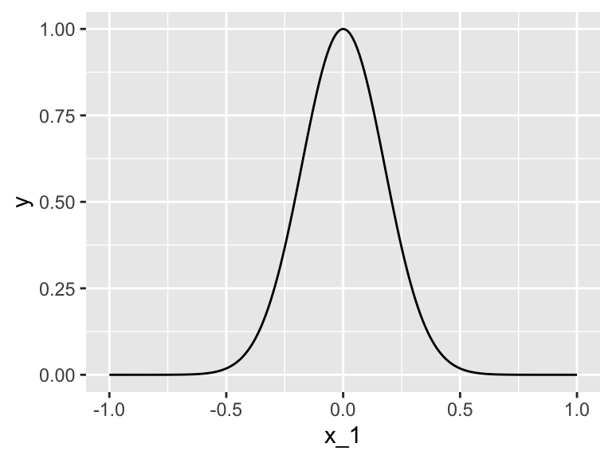
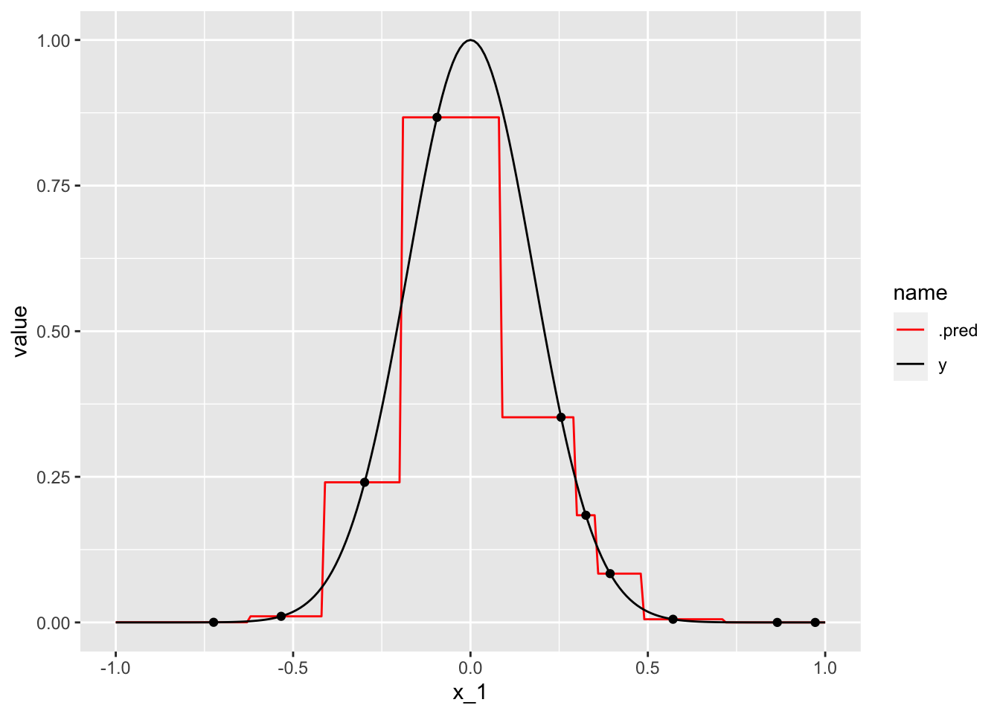
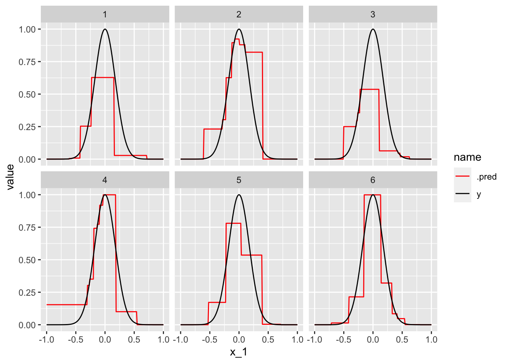
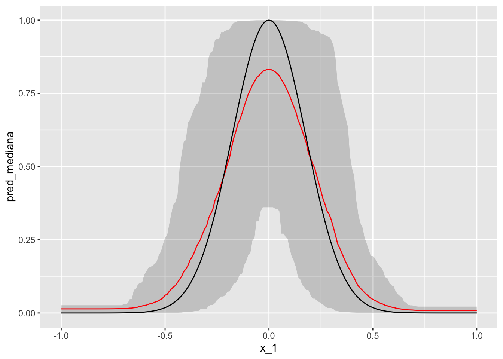

library(tidyverse)
library(tidymodels)
fun_exp <- function(x) exp(-16 * sum(x ^ 2))
simular_1 <- function(n, n_dim = 2){
datos_x <- tibble(x = runif(n_dim * n, -1, 1)) |>
mutate(nombre = rep(paste("x", 1:n_dim, sep="_"), n)) |>
mutate(id = rep(1:n, each = n_dim))
datos_y <- datos_x |>
group_by(id) |>
summarise(y = fun_exp(x))
datos_tbl <- datos_x |>
pivot_wider(values_from = x, names_from = nombre) |>
left_join(datos_y, by = "id")
datos_tbl
}Tarea 2: descomposiciones del error de predicción
En este ejemplo consideramos la descomposición simplificada al final de la sección 2, e intentaremos ver para el primer ejemplo de la sección 3 cómo se comporta cada error. Nótese que podemos examinar la descomposición en distintos valores de x:
\[\mathbf{y} - \hat{f_{\mathcal{L}}}(\mathbf{x}) = \underbrace{f^* (\mathbf{x}) - E(\hat{f_{\mathcal{L}}}(\mathbf{x}))}_\text{sesgo} + \underbrace{E(\hat{f_{\mathcal{L}}}(\mathbf{x})) - \hat{f_{\mathcal{L}}}(\mathbf{x})}_\text{variabilidad} + \underbrace{y - f^*(\mathbf{x})}_\text{irreducible}.\]
En este caso nos reduciremos a dimensión 1 (una variable de entrada). Generamos datos con:
Abajo mostramos la gráfica que queremos estimar:
datos_f <- tibble(x_1 = seq(-1, 1, 0.01)) |>
mutate(y = map_dbl(x_1, fun_exp)) |>
mutate(id = 0)
datos_f |>
ggplot(aes(x = x_1, y = y)) + geom_line()
Ahora construímos un modelo de 1-vecino más cercano, con una muestra de \(n=10\) casos:
set.seed(7251)
muestra <- simular_1(10, 1)#modelo
vmc_1 <- nearest_neighbor(neighbors = 1,
weight_func = "rectangular") |>
set_engine("kknn") |>
set_mode("regression")
#preprocesamiento
receta_vmc <- recipe(y ~ ., muestra) |>
update_role(id, new_role = "id muestra")
#flujo
flujo_vecinos <- workflow() |>
add_recipe(receta_vmc) |>
add_model(vmc_1)
#ajustar flujo
ajuste_vecinos <- fit(flujo_vecinos, muestra)
predicciones <- predict(ajuste_vecinos, datos_f) |>
bind_cols(datos_f) |>
pivot_longer(cols = c("y", ".pred"))En la siguiente grpafica observamos la muestra observada, las predicciones del modelo ajustado, y la curva que representa predicciones perfectas.
ggplot(predicciones, aes(x = x_1)) +
geom_line(aes(y = value, colour = name)) +
geom_point(data = muestra, aes(x = x_1, y = y)) +
scale_colour_manual(values = c("red", "black"))
Pregunta 1. Argumenta por qué el error irreducible en este ejemplo, para cualquier \(x\) es igual a 0 (no hay error irreducible).
Términos de sesgo y variabilidad
Para calcular los términos de sesgo y varianza es necesario ver varias muestras y ajustar el modelo. Recuerda que para el término de sesgo necesitamos calcular la media de las predicciones sobre varias muestras de entrenamiento.
reps_tbl <- map_df(1:500, function(rep){
muestra <- simular_1(10, 1)
ajuste_vecinos <- fit(flujo_vecinos, muestra)
predicciones <- predict(ajuste_vecinos, datos_f) |>
bind_cols(datos_f) |> select(x_1, .pred)
predicciones |> mutate(rep = rep)
})
reps_tbl <- reps_tbl |>
mutate(y = map_dbl(x_1, fun_exp))Podemos examinar cómo se ve nuestro predictor para distintas muestras:
reps_tbl |> pivot_longer(cols= c(".pred","y")) |>
filter(rep <= 6) |>
ggplot(aes(x=x_1, y = value, group = interaction(rep, name),
colour = name)) +
geom_line() + facet_wrap(~ rep) +
scale_colour_manual(values = c("red", "black"))
Veamos cuáles los valores esperados de las predicciones a lo largo de las distintas muestras de entrenamiento:
reps_tbl |>
group_by(x_1) |>
summarise(pred_media = mean(.pred), y = mean(y)) |>
pivot_longer(cols = c("pred_media", "y")) |>
ggplot(aes(x=x_1, y = value, colour = name)) +
geom_line() + scale_colour_manual(values = c("red", "black"))
Pregunta 2: cuál es el sesgo en x = 0 para este modelo? ¿Por qué pasa eso? ¿Existen otros valores x donde existe sesgo? ¿En qué regiones observas sesgo muy chico?
Ahora consideramos la variabilidad. Podemos resumir, por ejemplo, calculando cuantiles de las predicciones en cada x de interés:
reps_tbl |>
group_by(x_1) |>
summarise(pred_mediana = mean(.pred), y = mean(y),
q_90 = quantile(.pred, 0.95),
q_10 = quantile(.pred, 0.05)) |>
ggplot(aes(x=x_1, y = pred_mediana, ymin = q_10, ymax = q_90)) +
geom_ribbon(alpha = 0.2) +
geom_line(colour = "red") +
geom_line(aes(y = y), colour = "black") 
Pregunta 3: En qué regiones observas muy poca variablidad? Alrededor de x = 0 aproximadamente qué valores puede tomar la el término de variablidad? Alrededor de valores como x=0.25, qué influye más en el error de predicción, el sesgo o la variabilidad?
Pregunta 4 En la práctica, sólo tenemos una muestra para hacer nuestras predicciones. Explica en tus palabras por qué nos preocupa que la variabilidad sea grande.
Tipo de sesgo
Pregunta 5: discute y experimenta lo que sucede si tomas una muestra más grande (por ejemplo n=30) en el ejemplo anterior. ¿Qué pasa con el sesgo y la variabilidad?
Pregunta 6: Descomposición del sesgo: explica por qué este modelo no tiene sesgo de especificación (cuando tomamos una muestra muy grande), y que su problema principal es el sesgo de estimación. ¿Qué pasaría si ajustáramos en lugar de 1 vecino más cercano un modelo de regresión? ¿Qué tipo de sesgo sería más grande?
Pregunta 7: revisa el ejemplo que vimos en clase de la maldición de la dimensionalidad. ¿Por qué el sesgo de estimación es tan grande en ese caso (con muestra de mil casos y dimensión 8? Explica por qué no hay mucha variabilidad en ese ejemplo particular, pero las predicciones en x=0 son muy malas. ¿El problema es sesgo de estimación o de especificación?
Resumen varianza sesgo (opcional)
Si usamos el error cuadrático medio, puede demostrarse que de la ecuación de arriba se puede obtener:
\[Err(x) = \textrm{Sesgo}(x)^2 + \textrm{Var}(\hat{f}_{\mathcal L} (x)) + \sigma^ 2(x)\]
donde \(\textrm{Sesgo}(x) = f^*(x) - E(\hat{f}_{\mathcal L}(x))\), y \(\sigma^2(x)\) es la varianza del error irreducible en \(x\).
Podemos calcular para nuestro ejemplo
resumen_tbl <- reps_tbl |>
group_by(x_1) |>
summarise(pred_media = mean(.pred), y = mean(y),
error_cuad = mean((y - .pred)^2),
sesgo2 = (pred_media - y)^2,
varianza = var(.pred - pred_media),
sigma2 = 0^2)
resumen_tbl |> filter(x_1 == 0) |> round(3)# A tibble: 1 × 7
x_1 pred_media y error_cuad sesgo2 varianza sigma2
<dbl> <dbl> <dbl> <dbl> <dbl> <dbl> <dbl>
1 0 0.832 1 0.073 0.028 0.044 0resumen_tbl |> filter(x_1 == 0.25) |> round(3)# A tibble: 1 × 7
x_1 pred_media y error_cuad sesgo2 varianza sigma2
<dbl> <dbl> <dbl> <dbl> <dbl> <dbl> <dbl>
1 0.25 0.416 0.368 0.079 0.002 0.076 0Pregunta 7 (opcional) Verifica que en todos los casos el error cuadrático es igual al sesgo2 más la varianza más sigma2.